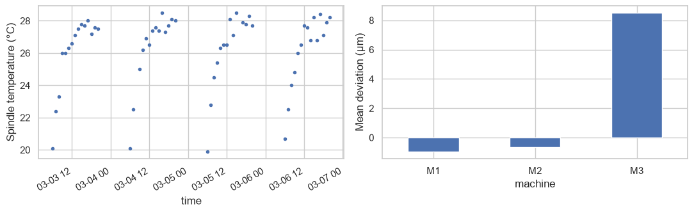
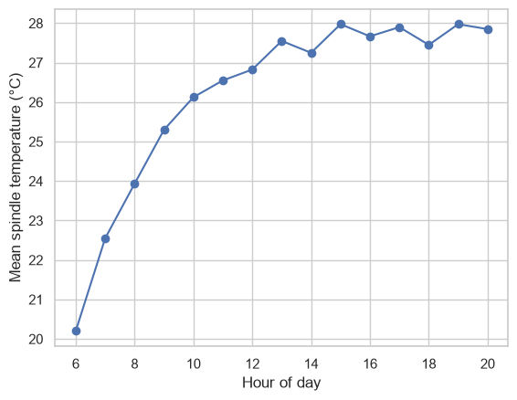

import numpy as np
import pandas as pd
import matplotlib.pyplot as plt
import seaborn as sns
sns.set_theme(style="whitegrid") # common style for all plots, as in every chapter
pd.set_option("display.precision", 3) # show 3 decimals in tablesGetting Started with pandas
Almost every chapter of this script works with tables: measurements with time stamps, test results per part, sensor values per run. In Python, such tables are handled with pandas. This lesson introduces pandas for everyone who has not used it before – and shows the typical style of pandas code, which differs from the NumPy and Matplotlib code you may know. It takes about 100 minutes; work through it before Chapter 1, run every cell yourself and change things to see what happens.
Prerequisites. Basic Python (variables, lists, dictionaries, functions, loops) and a first contact with NumPy and Matplotlib.
Learning goals. After this lesson you can
- explain what a Series and a DataFrame are and how they extend NumPy arrays,
- read a text file into a DataFrame and get a first overview,
- select rows and columns by name, by condition and by position,
- compute new columns without loops and summarise columns, also per group,
- work with time stamps and plot directly from pandas,
- read and write code in the typical pandas style,
- read the three pieces of plain Python that recur in every chapter: formatted output, list comprehensions and tables of results.
Dataset. A small, invented production log: shafts with a nominal diameter of 25 mm are turned on three machines, and one part per hour is measured; parts that deviate by more than 12 µm are scrapped. The data are created in the lesson itself, so no download is needed.
Why pandas?
A NumPy array is fast, but it usually holds only numbers, all of the same type, addressed by position: a[3] is “the fourth value”. Real engineering tables are different:
- columns have names and different types – a machine ID (text), a diameter (number), a time stamp, a pass/fail result;
- rows often have a meaningful label, e.g. a time stamp or a part number;
- values are missing.
pandas adds exactly this to NumPy: names, labels, mixed types and missing values. Underneath, the numbers are still stored in NumPy arrays, so the speed of vectorised operations remains. First the usual setup:
Series and DataFrame
A Series is a single column: values plus labels, the index.
temps = pd.Series([21.5, 22.0, 23.1], # the values
index=["M1", "M2", "M3"], # the labels (index)
name="spindle_temp_C") # an optional name
tempsM1 21.5
M2 22.0
M3 23.1
Name: spindle_temp_C, dtype: float64Access works by label, and arithmetic works on all values at once – as in NumPy. The labels are kept:
print(temps["M2"]) # one value, by its label
temps * 1.8 + 32 # °C -> °F for all values; no loop needed22.0M1 70.70
M2 71.60
M3 73.58
Name: spindle_temp_C, dtype: float64A DataFrame is a table: several Series that share one index. The easiest way to create one is a dictionary whose keys become the column names:
parts = pd.DataFrame({
"machine": ["M1", "M2", "M3"],
"diameter_mm": [25.003, 24.998, 25.012],
"ok": [True, True, False],
})
parts| machine | diameter_mm | ok | |
|---|---|---|---|
| 0 | M1 | 25.003 | True |
| 1 | M2 | 24.998 | True |
| 2 | M3 | 25.012 | False |
The index on the left (0, 1, 2) was created automatically. Each column has its own data type:
parts.dtypes # str = text (object in pandas < 3.0), float64 = decimal number, bool = True/Falsemachine str
diameter_mm float64
ok bool
dtype: objectReading a file and a first look
In practice, tables come from files. The folded cell below creates our example file data/shafts.csv – in a real project, you would receive such a file from a measuring machine or a database export. Like many files from German software, it uses a semicolon as separator and a decimal comma.
Code
# Creates the example file data/shafts.csv (4 days, 6:00-20:00, one measured part per hour).
from pathlib import Path
rng = np.random.default_rng(9)
days = pd.date_range("2025-03-03", periods=4, freq="D") # Monday to Thursday
time = pd.DatetimeIndex([d + pd.Timedelta(hours=h) for d in days for h in range(6, 21)]) # 6:00-20:00
n = len(time) # 60 parts
machine = np.tile(["M1", "M2", "M3"], n // 3)
offset = np.where(machine == "M3", 0.008, 0.0) # M3 is set too large
diameter = 25.0 + offset + rng.normal(0, 0.004, n)
warm_up = 1 - np.exp(-(time.hour.to_numpy() - 6) / 3) # spindle warms up after 6:00
spindle = 20 + 8 * warm_up + rng.normal(0, 0.4, n)
log = pd.DataFrame({
"time": time.strftime("%d.%m.%Y %H:%M"), # German date format
"machine": machine,
"diameter_mm": diameter.round(4),
"spindle_temp_C": spindle.round(1),
})
log["result"] = np.where((log["diameter_mm"] - 25).abs() > 0.012, "scrap", "OK") # tolerance ±12 µm
log.loc[[17, 40], "spindle_temp_C"] = np.nan # two missing readings
Path("data").mkdir(exist_ok=True)
log.to_csv("data/shafts.csv", sep=";", decimal=",", index=False)pd.read_csv reads the file. Separator and decimal mark are stated explicitly:
shafts = pd.read_csv("data/shafts.csv", sep=";", decimal=",")
shafts.head() # the first five rows| time | machine | diameter_mm | spindle_temp_C | result | |
|---|---|---|---|---|---|
| 0 | 03.03.2025 06:00 | M1 | 24.997 | 20.1 | OK |
| 1 | 03.03.2025 07:00 | M2 | 25.001 | 22.4 | OK |
| 2 | 03.03.2025 08:00 | M3 | 25.001 | 23.3 | OK |
| 3 | 03.03.2025 09:00 | M1 | 25.003 | 26.0 | OK |
| 4 | 03.03.2025 10:00 | M2 | 25.005 | 26.0 | OK |
Four commands give a first overview of every new table:
print(shafts.shape) # (rows, columns) – an attribute, therefore without brackets
shafts.info() # column names, data types, number of non-missing values(60, 5)
<class 'pandas.DataFrame'>
RangeIndex: 60 entries, 0 to 59
Data columns (total 5 columns):
# Column Non-Null Count Dtype
--- ------ -------------- -----
0 time 60 non-null str
1 machine 60 non-null str
2 diameter_mm 60 non-null float64
3 spindle_temp_C 58 non-null float64
4 result 60 non-null str
dtypes: float64(2), str(3)
memory usage: 3.7 KBshafts.describe() # summary statistics of all numeric columns| diameter_mm | spindle_temp_C | |
|---|---|---|
| count | 60.000 | 58.000 |
| mean | 25.002 | 26.221 |
| std | 0.006 | 2.286 |
| min | 24.992 | 19.900 |
| 25% | 24.998 | 26.000 |
| 50% | 25.001 | 27.100 |
| 75% | 25.006 | 27.700 |
| max | 25.017 | 28.500 |
shafts["result"].value_counts() # frequencies of a text columnresult
OK 55
scrap 5
Name: count, dtype: int64info() shows that spindle_temp_C has 58 non-missing values in 60 rows: two readings are missing. describe() ignores them automatically.
Selecting rows and columns
Columns are selected by name. One name gives a Series, a list of names gives a DataFrame – hence the double brackets:
d = shafts["diameter_mm"] # one column -> Series
shafts[["machine", "diameter_mm"]].head(3) # list of columns -> DataFrame| machine | diameter_mm | |
|---|---|---|
| 0 | M1 | 24.997 |
| 1 | M2 | 25.001 |
| 2 | M3 | 25.001 |
Rows are selected with a mask: a comparison gives one truth value per row, and df[mask] keeps the rows where it is True.
m3 = shafts["machine"] == "M3" # True for every part of machine M3
shafts[m3].head(3)| time | machine | diameter_mm | spindle_temp_C | result | |
|---|---|---|---|---|---|
| 2 | 03.03.2025 08:00 | M3 | 25.001 | 23.3 | OK |
| 5 | 03.03.2025 11:00 | M3 | 25.006 | 26.3 | OK |
| 8 | 03.03.2025 14:00 | M3 | 25.006 | 27.5 | OK |
Several conditions are combined with & (and), | (or) and ~ (not), each condition in brackets – Python’s and/or do not work on columns:
shafts[(shafts["machine"] == "M3") & (shafts["result"] == "scrap")]| time | machine | diameter_mm | spindle_temp_C | result | |
|---|---|---|---|---|---|
| 11 | 03.03.2025 17:00 | M3 | 25.014 | 28.0 | scrap |
| 17 | 04.03.2025 08:00 | M3 | 25.014 | NaN | scrap |
| 23 | 04.03.2025 14:00 | M3 | 25.017 | 27.6 | scrap |
| 41 | 05.03.2025 17:00 | M3 | 25.012 | 27.9 | scrap |
| 47 | 06.03.2025 08:00 | M3 | 25.015 | 24.0 | scrap |
For rows and columns at once, use loc (by label or mask) or iloc (by position, counting from 0):
print(shafts.loc[m3, "diameter_mm"].mean().round(4)) # rows: mask, column: by name
shafts.iloc[:2, :3] # first two rows, first three columns25.0085| time | machine | diameter_mm | |
|---|---|---|---|
| 0 | 03.03.2025 06:00 | M1 | 24.997 |
| 1 | 03.03.2025 07:00 | M2 | 25.001 |
Computing with columns
New columns are computed from existing ones – for all rows at once, without a loop:
shafts["dev_um"] = (shafts["diameter_mm"] - 25.0) * 1000 # deviation from nominal in µm
shafts[["diameter_mm", "dev_um"]].head(3)| diameter_mm | dev_um | |
|---|---|---|
| 0 | 24.997 | -3.2 |
| 1 | 25.001 | 1.0 |
| 2 | 25.001 | 1.4 |
For comparison, the loop version that you would write in plain Python – it gives the same result but is longer and, for large tables, much slower:
dev = []
for value in shafts["diameter_mm"]:
dev.append((value - 25.0) * 1000)
shafts["dev_um"] = devSummaries are methods of the column: s.mean(), s.median(), s.std(), s.abs(), s.max(). They skip missing values automatically:
t = shafts["spindle_temp_C"]
print("missing values:", t.isna().sum()) # isna(): True where a value is missing
print("mean:", t.mean().round(1)) # computed from the values present
print("mean absolute deviation (µm):", shafts["dev_um"].abs().mean().round(1))missing values: 2
mean: 26.2
mean absolute deviation (µm): 4.7The last line shows the typical pandas style: shafts["dev_um"].abs().mean() reads from left to right – take the deviation, its absolute value, the mean. NumPy writes the same nested from the inside out, np.mean(np.abs(...)). With pandas data, prefer the methods: they skip missing values, NumPy functions often do not (see the Python reference in the appendix).
Summaries per group
“Which machine is best?” is a question about groups. groupby splits the table by the values of a column, summarises each part and puts the results together:
shafts.groupby("machine")["dev_um"].agg(["mean", "std", "count"])| mean | std | count | |
|---|---|---|---|
| machine | |||
| M1 | -0.950 | 2.299 | 20 |
| M2 | -0.670 | 4.434 | 20 |
| M3 | 8.515 | 4.733 | 20 |
Machine M3 deviates by about +8 µm on average: it is set too large. The scrap rate per machine uses a useful trick – True counts as 1, so the mean of a truth value is a share:
shafts["scrap"] = shafts["result"] == "scrap" # True / False per part
shafts.groupby("machine")["scrap"].mean() # share of scrap per machinemachine
M1 0.00
M2 0.00
M3 0.25
Name: scrap, dtype: float64Time stamps
The column time is still text. pd.to_datetime turns it into real time stamps; the format codes (%d day, %m month, %Y year, %H hour, %M minute) describe the text exactly:
shafts["time"] = pd.to_datetime(shafts["time"], format="%d.%m.%Y %H:%M")
shafts = shafts.set_index("time") # the time becomes the row index
shafts.head(3)| machine | diameter_mm | spindle_temp_C | result | dev_um | scrap | |
|---|---|---|---|---|---|---|
| time | ||||||
| 2025-03-03 06:00:00 | M1 | 24.997 | 20.1 | OK | -3.2 | False |
| 2025-03-03 07:00:00 | M2 | 25.001 | 22.4 | OK | 1.0 | False |
| 2025-03-03 08:00:00 | M3 | 25.001 | 23.3 | OK | 1.4 | False |
With a time index, pandas offers time-specific operations, e.g. the hour of each row or a daily mean:
print(shafts.index.hour[:5]) # hour of the day of the first five rows
shafts["spindle_temp_C"].resample("D").mean() # one mean per dayIndex([6, 7, 8, 9, 10], dtype='int32', name='time')time
2025-03-03 26.073
2025-03-04 26.371
2025-03-05 26.236
2025-03-06 26.213
Freq: D, Name: spindle_temp_C, dtype: float64The hour of each row can also serve as a groupby key: instead of a column name, groupby accepts any series with one value per row. shafts.groupby(shafts.index.hour) therefore pools the same hour across all days – a typical daily profile (Exercise 4). resample, in contrast, summarises consecutive intervals, like the four daily means above.
Plotting from pandas
Series and DataFrames have a plot method. It calls Matplotlib, takes the x-axis from the index and returns the familiar Matplotlib axes ax, so you can continue as usual:
fig, axes = plt.subplots(1, 2, figsize=(11, 3.5))
shafts["spindle_temp_C"].plot(ax=axes[0], marker=".", linestyle="none") # time series as points
axes[0].set(ylabel="Spindle temperature (°C)")
shafts.groupby("machine")["dev_um"].mean().plot.bar(ax=axes[1], rot=0) # bar chart of a summary
axes[1].set(ylabel="Mean deviation (µm)")
plt.tight_layout(); plt.show()
Every morning the spindle starts cold and warms up to about 28 °C (there is no production at night); machine M3 stands out in the bar chart. Two lines of pandas replaced the data handling that Matplotlib alone would need.
Three Python patterns you will meet everywhere
The chapters use three pieces of plain Python again and again. They are not pandas, but you need them to read the code.
Formatted output. An f-string – a text with an f in front – inserts values in curly brackets. A format code after a colon controls how a number is shown:
d = shafts["diameter_mm"].mean() # mean diameter in mm
m = shafts["dev_um"].mean() # mean deviation from nominal in µm
share = shafts["scrap"].mean() # share of scrap parts
print(f"mean diameter: {d:.3f} mm") # .3f: three decimals
print(f"mean deviation: {m:+.1f} µm") # +: always show the sign
print(f"scrap: {share:.1%}") # .1%: as a percentage, one decimal
print(f"{12345.678:,.1f}") # ,: thousands separator
print(f"{'mean':8s}{m:7.2f} µm") # 8s, 7.2f: a width of 8 or 7 characters ...
print(f"{'maximum':8s}{shafts['dev_um'].max():7.2f} µm") # ... gives aligned columnsmean diameter: 25.002 mm
mean deviation: +2.3 µm
scrap: 8.3%
12,345.7
mean 2.30 µm
maximum 17.40 µmList comprehensions. [expression for item in values] builds a list in one line. It is short for a loop that appends the expression for every item:
names = [f"T{i}" for i in range(1, 4)] # the same as: names = []; for i in range(1, 4): names.append(f"T{i}")
names['T1', 'T2', 'T3']Tables of results. When a loop computes several numbers per case, collect each case as a dictionary in a list – one dictionary per row – and turn the list into a DataFrame at the end. The keys become the column names:
rows = [] # one entry per row of the result table
for limit in [8, 10, 12]: # three possible tolerance limits in µm
within = shafts["dev_um"].abs() <= limit # True if the part lies within ±limit
rows.append({"limit_um": limit, "share_within": within.mean()}) # one row as a dictionary
pd.DataFrame(rows) # list of rows -> table| limit_um | share_within | |
|---|---|---|
| 0 | 8 | 0.800 |
| 1 | 10 | 0.833 |
| 2 | 12 | 0.917 |
The pandas style in a nutshell
| Principle | Example |
|---|---|
| Columns by name, not by position | df["diameter_mm"] instead of a[:, 2] |
| Whole columns at once, no loops | df["dev_um"] = (df["diameter_mm"] - 25) * 1000 |
| Rows by condition | df[df["machine"] == "M3"] |
| Methods, read from left to right | df["dev_um"].abs().mean() |
| Missing values are skipped | s.mean() uses only the values present |
| Split – apply – combine | df.groupby("machine")["dev_um"].mean() |
| Methods return new objects | df.sort_values("dev_um") leaves df unchanged |
The last principle makes method chaining possible: shafts.groupby("machine")["dev_um"].mean().plot.bar() is one expression of four steps. The Python quick reference in the appendix collects all functions used in this script – including the pandas functions of this lesson – and explains the design behind chaining.
Summary
Key takeaways
- A Series is a column with labels (index); a DataFrame is a table of Series that share one index.
- Read files with
pd.read_csv, stating separator and decimal mark explicitly; get an overview withshape,info(),describe(),value_counts(). - Select columns by name, rows by masks (
&,|,~), both together withloc(labels) oriloc(positions). - Compute with whole columns instead of loops; summarise with methods, which skip missing values; use
groupbyfor summaries per group. - With time stamps as index,
resampleandindex.hourwork on the time axis;.plot()draws directly from a table. - f-strings with format codes (
:.1f,:.1%) print numbers readably; list comprehensions and lists of rows build lists and tables in a loop.
Exercises
How many parts were measured on each machine, and how many of them are scrap? Use
value_countsorgroupby.Select all parts with a diameter above 25.010 mm. On which machines were they made?
Compute the share of parts per machine whose deviation is within ±10 µm.
Compute the mean spindle temperature for each hour of the day and plot it as a line. When is the spindle warm?
Rewrite the following loop in pandas style with one line:
count = 0 for value in shafts["spindle_temp_C"]: if value > 27: count += 1Does your line give the same result? (Hint: what happens to the two missing values?)
For the tolerance limits 5, 10, 15 and 20 µm, build a table with the share of parts whose deviation lies within ±limit, as in the last section. In the same loop, print one line per limit with an f-string, in the form
±10 µm: xx.x% within.
Solutions
Solution to Exercise 1
print(shafts["machine"].value_counts()) # parts per machine
shafts.groupby("machine")["scrap"].sum() # scrap per machine: True counts as 1machine
M1 20
M2 20
M3 20
Name: count, dtype: int64machine
M1 0
M2 0
M3 5
Name: scrap, dtype: int64Each machine made 20 parts. Scrap occurs only on M3, the machine with the offset.
Solution to Exercise 2
large = shafts[shafts["diameter_mm"] > 25.010] # mask: True for large diameters
large["machine"].value_counts()machine
M3 9
M2 1
Name: count, dtype: int64Nearly all large diameters come from M3 – the same offset seen in the group summary.
Solution to Exercise 3
shafts["within"] = shafts["dev_um"].abs() <= 10 # True if |deviation| <= 10 µm
shafts.groupby("machine")["within"].mean() # share per machine: the mean of True/Falsemachine
M1 1.00
M2 0.95
M3 0.55
Name: within, dtype: float64As in the scrap example, a new True/False column is summarised per machine; the mean of a truth value is a share. On M3, only 55 % of the parts lie within ±10 µm – its offset of about 8 µm leaves little room.
Solution to Exercise 4
by_hour = shafts.groupby(shafts.index.hour)["spindle_temp_C"].mean() # key: the hour of each row
ax = by_hour.plot(marker="o") # x-axis: the index, i.e. the hour
ax.set(xlabel="Hour of day", ylabel="Mean spindle temperature (°C)")
plt.show()
The spindle starts cold at 6:00, warms up over the first hours of the shift and reaches about 28 °C in the early afternoon. Measurements taken early in the morning were made on a cold machine – a possible influence on the diameter worth checking.
Solution to Exercise 5
print((shafts["spindle_temp_C"] > 27).sum()) # comparison gives True/False; sum counts True30Both versions give the same count: a missing value (NaN) compared with 27 gives False – in the loop as well as in pandas – so the two missing readings are not counted. The pandas line is shorter, faster and reads like the question: “How many temperatures are above 27 °C?”
Solution to Exercise 6
rows = []
for limit in [5, 10, 15, 20]: # tolerance limits in µm
share = (shafts["dev_um"].abs() <= limit).mean() # share of parts within ±limit
rows.append({"limit_um": limit, "share_within": share}) # one row of the table
print(f"±{limit} µm: {share:.1%} within") # one line of text per limit
pd.DataFrame(rows)±5 µm: 66.7% within
±10 µm: 83.3% within
±15 µm: 96.7% within
±20 µm: 100.0% within| limit_um | share_within | |
|---|---|---|
| 0 | 5 | 0.667 |
| 1 | 10 | 0.833 |
| 2 | 15 | 0.967 |
| 3 | 20 | 1.000 |
The loop does two things at once: it prints a readable line for each limit and collects the same numbers as rows of a table, which can be processed further – sorted, plotted or saved.